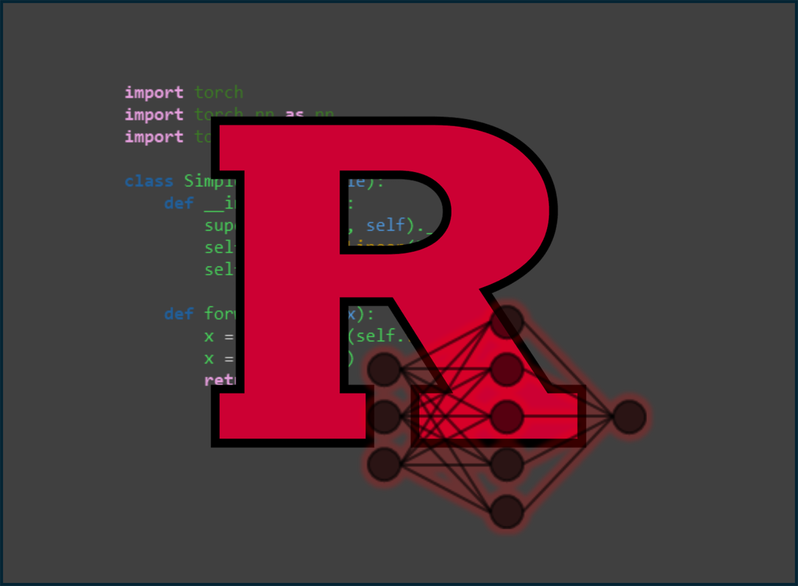

<!doctype html>
<html lang="en">

<head>
	<meta charset="utf-8">

	<title>reveal.js - Markdown Example</title>

	<link rel="stylesheet" href="./dist/reveal.css">
	<link rel="stylesheet" href="./dist/theme/black.css" id="theme">

	<link rel="stylesheet" href="./plugin/highlight/monokai.css">
</head>

<body>

	<div class="reveal">

		<div class="slides">

			<!-- Slides are separated by three dashes (the default) -->
			<section data-markdown data-separator="^\n----\n$" data-separator-vertical="^\n--\n$">
				<script type="text/template">
					## Class 7: Formulating an AI Project
					---
					

					----

					## References
					---

					* Artificial Intelligence: A Modern Approach (Russell and Norvig)
					* Deep Learning (Goodfellow, Bengio, Courville)
					* The Art of Doing Science and Engineering (Hamming)
					* Google guide to <a href="https://developers.google.com/machine-learning/managing-ml-projects/">Managing ML Projects</a>


					----

					## Outline
					---

					1. Methods of formulating AI Projects
						* V-model
						* Russell and Norvig
						* Goodfellow *et al.*
						* Google

					--

					2. Concept formulation and requirements specification practices
					3. Design and implementation practices: model selection, training, experimentation, pipeline development
					4. Integration and test (I&T), verification and validation (V&V), instrumentation practices
					5. Operations and maintenance (O&M), production and feedback looping

					--

					6. Building / staffing an AI project team
					7. Budgeting for an AI project

					----

					# Part 1: Methods of Formulating AI Projects

					----

					## V-Model
					---

					
					<a href="https://en.wikipedia.org/wiki/V-model#/media/File:Systems_Engineering_Process_II.svg">https://en.wikipedia.org/wiki/V-model#/media/File:Systems_Engineering_Process_II.svg</a>

					--

					* Common and often required in US government projects
					* Intended to minimize complex project cost, schedule and technical risk
					* Validation: did we *build the right system*?
					* Verification: did we *built the system right*?

					----

					## Russel and Norvig
					---

					* Problem Formulation: *"what problem do I want to solve for my users?"*
					* Data collection, assessment, and management
						* Do you have enough data? Do you understand its provenance?
						* Feature engineering
						* Exploratory data analysis (EDA)
					* Model selection and training
						* e.g., neural network vs. random forest?
						* Receiver Operating Characteristic (ROC) curves

					--

					* Trust, interpretability, and explainability
						* Source control, testing, review, monitoring, accountability
						* Interpretability: inspect the *model* to determine why a particular input caused an output?
						* Explainability: the model can be a black-box but *other processes* (integrated gradients) explain what it is doing
					* Operation, monitoring, and maintenance
						* Strict requirement
						* Long tail problem
						* Non-stationarity problem

					----

					## Goodfellow
					---

					* Determine your goals
						* What error metric to use with what target value?
					* Establish a working end-to-end pipeline as soon as possible
						* Include data, training, and estimation of performance metrics

					--

					* Instrument the system
						* Determine bottlenecks and diagnose which components are performing poorly
					* Repeatedly make incremental changes
						* Adjust data, hyperparameters, or algorithms based on findings

					----

					## Google
					---
					

					--

					* Ideation and planning
						* Determine if ML is the right solution and what metrics it must meet
					* Experimentation
						* Develop a high performing model that solves the problem
					* Pipeline building
						* Implement infrastructure to scale, monitor, and maintain models in production
					* Productionization
						* Deploy and monitor the system

					----

					# Part 2: Concept Formulation and Requirements Specification Practices

					----

					# Part 3: Design and implementation Practices

					----

					# Part 4: I&T, V&V, and Instrumentation

					----

					# Part 5: Production, O&M, and Continuous Feedback

					----

					# Part 6: Building / Staffing an AI Project Team

					----

					# Part 7: Budgeting an AI Project

					----

					

                </script>
			</section>
		</div>
	</div>

	<script src="./dist/reveal.js"></script>
	<script src="./plugin/markdown/markdown.js"></script>
	<script src="./plugin/highlight/highlight.js"></script>
	<script src="./plugin/notes/notes.js"></script>
	<script src="./plugin/math/math.js"></script>

	<script>

		Reveal.initialize({
			controls: true,
			progress: true,
			history: true,
			center: true,

			plugins: [RevealMarkdown, RevealHighlight, RevealNotes, RevealMath.KaTeX]
		});

	</script>

</body>

</html>